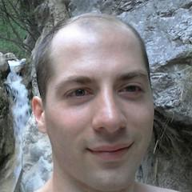

James Fish

Elixirist
DBConnection - Ecto's SQL Sandbox
The DBConnection framework was introduced in Ecto 2.0. It increased performance and introduced the concurrent testing sandbox. We will look under the hood of Ecto to understand why it was written, how it works, what issues occurred, and how to take full advantage of the optimisations and the sandbox.
James is a member of the Elixir and Ecto core teams. He enjoys all BEAM languages and contributes to many open source projects. When not answering questions in the Elixir IRC channel he enjoys playing soccer and baking cakes.
Github: fishcakez